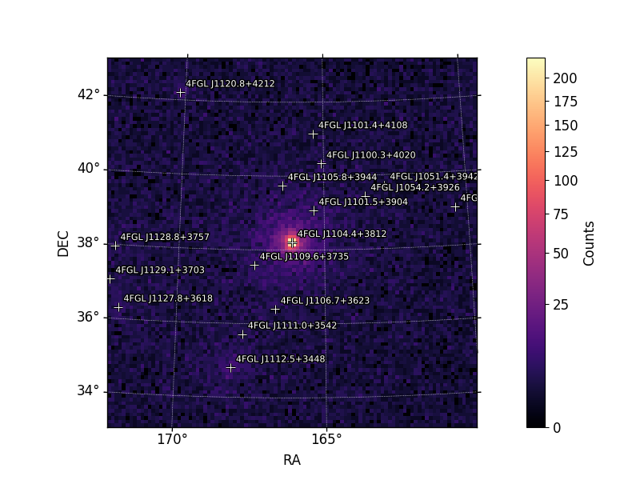
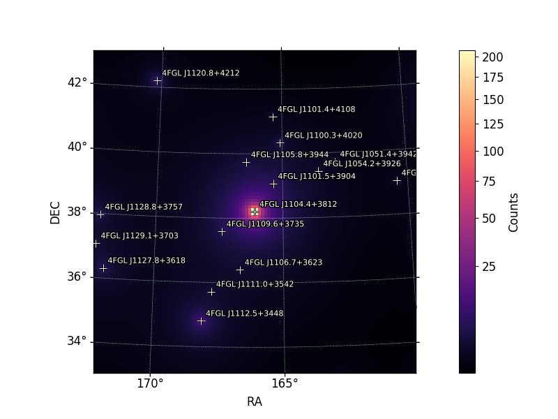
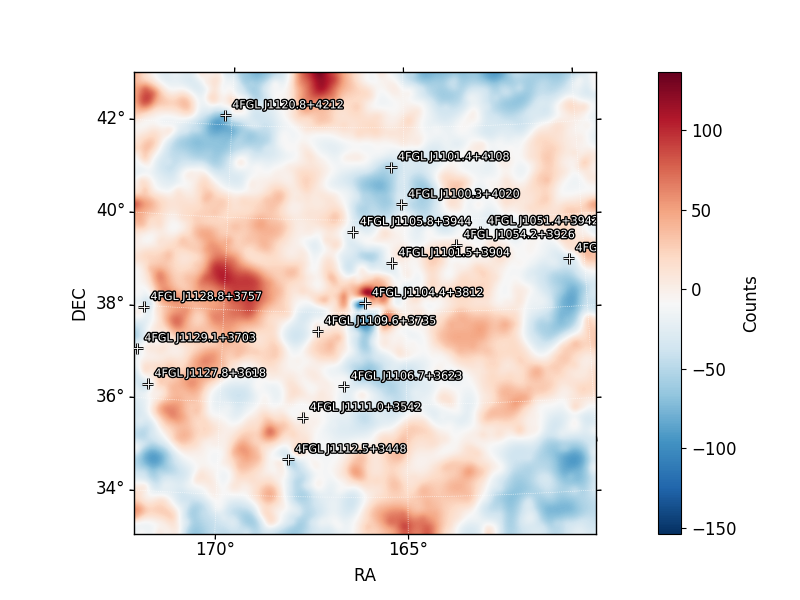
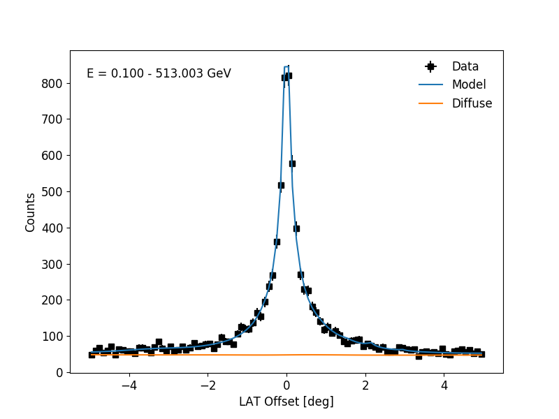
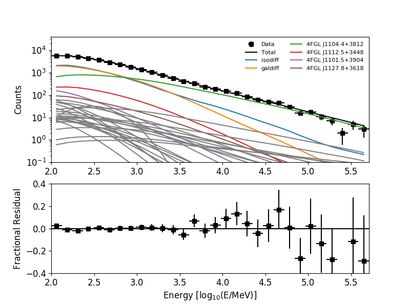
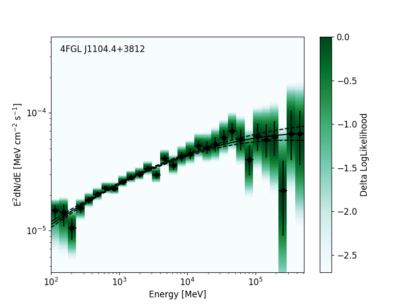

If you want to change the model for your source then use set_source_spectrum function below with the appropriate model name as found on this website. Then set appropriate values for each parameter (the values do not need to be perfect because they will change during the fit but they do need to be within the prescribed bounds of the fit). IMPORTANT: If you want to use the catalog model then delete this from your code.
gta.set_source_spectrum('4FGL J1104.4+3812',spectrum_type='PLSuperExpCutoff', update_source = False)
gta.set_parameter('4FGL J1104.4+3812','Prefactor',value = 1.721997147e-11, scale = 1, error = 0.01313677393e-11, update_source = False)
gta.set_parameter_bounds('4FGL J1104.4+3812','Prefactor',[1e-16,1000e-11])
gta.set_parameter('4FGL J1104.4+3812','Index1', value = 1.739376675, scale = 1, error = 0.006991402649, update_source = False)
gta.set_parameter_bounds('4FGL J1104.4+3812','Index1', [-5,5])
gta.set_parameter('4FGL J1104.4+3812','Scale', value = 1287.365845, scale = 1, update_source = False)
gta.set_parameter('4FGL J1104.4+3812','Cutoff', value = 256500, scale = 1, update_source = False)
gta.set_parameter_bounds('4FGL J1104.4+3812','Cutoff',[100,513000])
gta.set_parameter('4FGL J1104.4+3812','Index2', value = 1, scale = 1, update_source = False)
This performs a likelyhood minimization in order to aquire a TS value for each source.
gta.optimize() gta.print_model() print(gta.roi[SOURCE])
Sources with too little significance can screw up the analysis. This freezes all sources with less than 3 sigma significance.
gta.free_sources(minmax_ts = [9,1600000]) fit_results = gta.fit() gta.print_model() print(gta.roi[SOURCE])
You can name the output files whatever you want by changing the names here.
gta.write_roi('fit_LP', make_plots=True,save_model_map=True)
tsmap = gta.tsmap(prefix='TSmap_fit_LP', make_plots=True)
resid = gta.residmap('Residuals_fit_LP',make_plots=True)
gta.print_model()
gta.print_params(allpars=True)
gta.print_roi()
gta.residmap(prefix = 'weighted_residuals', make_plots = True, use_weights = True)
By default the bin_index is set to 2. After running the analysis once the output file will contain a new bin_index that you will specify here and run another analysis. Depending on the model you are using you will have to specify the free_pars of the source here. The cov_scale parameter is a "Scale factor that sets the strength of the prior on nuisance parameters that are free. Setting this to None disables the prior." I remember this parameter solved a problem I was having but I do not remember what that problem was. Though it was most likely a minimizer convergence failure.
sed = gta.sed(SOURCE,prefix='SED_fit_LP', bin_index = 1.72304034233, free_background = True, cov_scale = None,free_pars=['norm','alpha','beta'])
gta.write_roi('SED_fit_LP', make_plots=True,save_model_map=True)
ltcurve.py
ViewDownload
After inputing the parameter values for the main target found in the SED analysis and freeing the appropriate sources you can run this analysis. Then you can use source_lightcurve.fits within the output folder to graph the ltcurve (PLACE PYTHON FILE USED TO GRAPH POINTS HERE). Make sure you clean the data of any nan values at this point.
#!/usr/bin/env python2.7
import os
import matplotlib.pyplot as plt
import matplotlib
import numpy as np
from fermipy.gtanalysis import GTAnalysis
from fermipy.plotting import ROIPlotter, SEDPlotter
from astropy.table import Table, Column
import astropy.io.fits as pyfits
import yaml
plt.switch_backend('agg')
config = yaml.load(open('config.yaml'))
SOURCE = config['selection']['target']
DIR = config['fileio']['outdir']
LCDIR = config['lightcurve']['outdir']
gta = GTAnalysis('config.yaml', logging={'verbosity':3})
matplotlib.interactive(True)
gta.setup()
gta.print_model()
print(gta.roi[SOURCE])
These values are located within the same file as the bin_index. The value and error, except for the norm, of each parameter must be given. Depending on the model you are using the names and number of parameters will differ.
gta.set_parameter('4FGL J1104.4+3812','norm',value = 1.721997147e-11, scale = 1, error = 0.01313677393e-11, update_source = False)
gta.set_parameter_bounds('4FGL J1104.4+3812','norm',[1e-16,1000e-11])
gta.set_parameter('4FGL J1104.4+3812','alpha', value = 1.739376675, scale = 1, error = 0.006991402649, update_source = False)
gta.set_parameter('4FGL J1104.4+3812','Eb', value = 1287.365845, scale = 1, update_source = False)
gta.set_parameter('4FGL J1104.4+3812','beta', value = 0.01523674109, scale = 1, error = 0.002518878993, update_source = False)
IMPORTANT: You will have to use gta.free_source() in order to free and freeze the same sources that were freed and frozen during your SED analysis. You can place that code here.
Depending on how large your errors are you may or may not want to free the background. The shape_ts_threshold sets the TS threshold at which shape parameters of sources will be freed. This can be problematic when you have already input your free and frozen sources as this command takes priority. I set the value arbitrarily large so it does not free any sources I do not want it too.
lc = gta.lightcurve(SOURCE,free_background=False,make_plots=True,shape_ts_threshold = 1000000000) gta.write_roi(LCDIR+'LightCurve',make_plots=True,save_model_map=True)
This makes an ascii data file of all the major values you will need to graph your LightCurve. However, I use the source_lightcurve.fits file within the output folder to do my graphing.
lctab = Table([lc['tmin_mjd'],lc['tmax_mjd'],lc['ts'],lc['flux'],lc['flux_err'],lc['eflux'],lc['eflux_err']]) lctab.write(DIR+'/'+LCDIR+'LightCurve.txt',format='ascii.fixed_width')
Bayesian Blocks
I wrote this code in a python Jupyter notebook. It makes it easier to fix bugs and what not. After making your lightcurve remove all points with ts values less than or equal to 3. This should get rid of most points that mess up the bayesian block code. Then remove all nan values from the data. Then run the bayesian blocks and plot it. Below ae the the important modules and code.
from pylab import * import astropy.io from astropy.stats import bayesian_blocks from os import path, access, R_OK import csv import pandas as pd from io import StringIO
The *_cut affix refers to my data after removing the nan values and low ts values. And the p0 value refers to the 1-sigma change required for two averages to be considered seperate blocks. So a p0 = .05 corresponds to a 95% difference in average flux between each block.
edges = bayesian_blocks(t_cut, flux_cut, fluxerr_cut, fitness='measures', p0 = 3e-7)
flux_cut_array = np.array(flux_cut)
plt.figure(1,figsize=(20,5))
errorbar(t_cut,flux_cut/(average(flux_cut)*(t[-1]-t[0])), yerr = array(fluxerr_cut)/(average(flux_cut)*(t[-1]-t[0])), fmt = 'o', alpha =0.2)
H2 = hist(t_cut, bins=edges, histtype='step', weights = flux_cut_array/2.1691328866824121e-08, normed = True,linewidth = 2,color='r')
ylabel(r'Flux (normalized units) = $\Phi_{\gamma} = Photons*cm^{-2} s^{-1}$')
xlabel('MJD')
plt.title('Bayesian Blocks with p0=5sigma')
plt.savefig('bayesianblock_5sigma.png')
OUTPUT IMAGES
Hover Mouse Over Images
The images created during an analysis help us visual a source's properties and help us see any potential probelms with the analysis. Below are what I believe to be the most important images. Other images will be created and have their own usefull information however the below images have the most pertinent information.

Counts Map
This image plots the number of counts per sky bin. This is what the Fermi sattelite sees.

Model Map
Each source has its own model in the catalog. This image is a compilation of every model of each source in the field of view.

Counts Residual
Subtracting the model map from the counts map gives us a value called the residual. Given a perfect model the residual would be zero. This image acts as measure of model fitness. I believe this map has twenty thousand counts, so a residual that variates from -150 to 100 is very good
Sigma Residual
This image tells us how significant the residual fluxuations are. Anything between 0 and 2 sigma is statisticly due to a random fluxuation in the night sky (stochastic noise). Even the occasional 3 sigma variation can be stochastic noise.
X Projection
This images stacks all the counts along one axis. It is like viewing the source from the side. It is a good sign when the blue model and the error bars are ontop of eachother. Otherwise you may have made an oopsie with your free parameters.

Y Projection
This images stacks all the counts along one axis. It is like viewing the source from the side. It is a good sign when the blue model and the error bars are ontop of eachother. Otherwise you may have made an oopsie with your free parameters.

Spectrum Fit
Above is the total counts per energy bin. This is an SED before we transform counts into units of energy. Below is another variation of the residual. We want an equal amount of points and error bars above and below the zero line.SED
This is what we get when we transorm the Spectrum Fit's count bins into energy bins. There are less high energy photons than low energy photons for this source but the total energy emission is greater at high energies than at low energies.

SED With Sigma Error
Same as the SED but with visual significant deviations. As long as most of the points have overlapping the model you are doing good.PROBLEM SOLVING/TIPS AND TRICKS/WISDOM: work in progress
Problematic time periods
The most prevelent error for my analysis was a GTI error. GTI stands for Good Time Interval. Every now and then a bin would have too little GTI and raise an error. My first solution was to iterate through the data from the start time of the error to the next start time of good GTI. Then I can broke the lightcurve up into two blocks, one before and one after the bad GTI error. This worked for a few bins but not all. All GTI errors that could not be solved this way was instead iterated manually till both blocks ran without errors. One of these periods of time is associated with a FermiLAT malfunction. I am not sure what caused the rest but they range from a day to a month. Luckily I did all the hard work of finding these anaomalyous time regions. If your analysis runs through any of these make sure to work around them.
The times below are formatted in fermi seconds and represent the start and end times for all proplematic time periods.
258423217.000 - 258856049.92907503 | 5 days
286829018.000 - 286917169.90681678 | 1 days
407983419.494 - 409498047.63590258 | 17 days + at least 4 salvageable days
415081647.000 - 415343491.645 | 3 days
417966091.000 - 418021891.000 | 1 days
491867020.000 - 492018220.000 | 2 days
492018220.494 - 492448306.000 | 5 days
543012221.000 - 546855985.000 | 2018-03-17 - 2018-05-01 about a month
547818985.000 - 548510185.000 | 8 days
550540585.000 - 551145385.000 | 7 days
551822185.000 - 552425185.000 | 7 days
554370985.000 - 555090221.494 | 8 days
556105421.000 - 558604903.000 | 29 days
558943303.000 - 559045108.000 | 1 day
560652508.000 - 562461508.000 | 20 days
563476708.000 - 563910508.000 | 5 days
570631708.000 - 571319308.000 | 8 days
Recomendations
If you have a large data set, break the analysis into chunks to quicken computaion time and to buffer your analysis from computational failure.
Redoing a ltcurve analysis
If you need to change any parameters delete all output files before restarting. Sadly the previous parameters are hardwired within the output files. It is supposed to be designed so large chunks of computation do not have to be redone, but oh well you still have to.